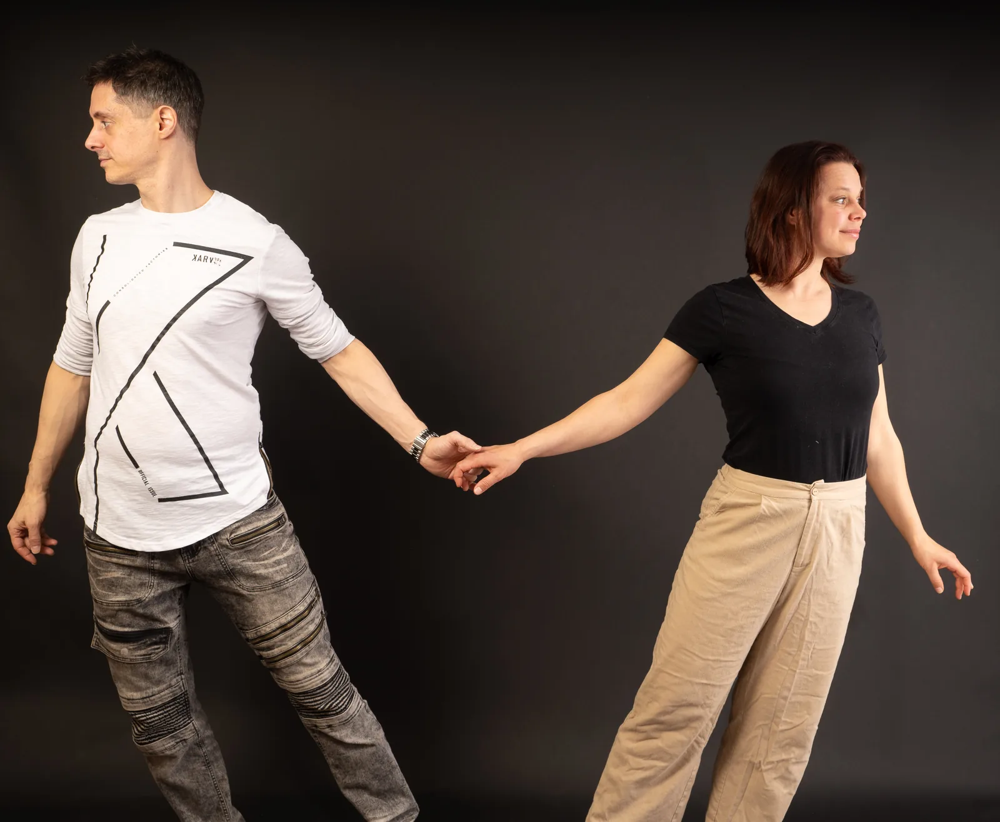
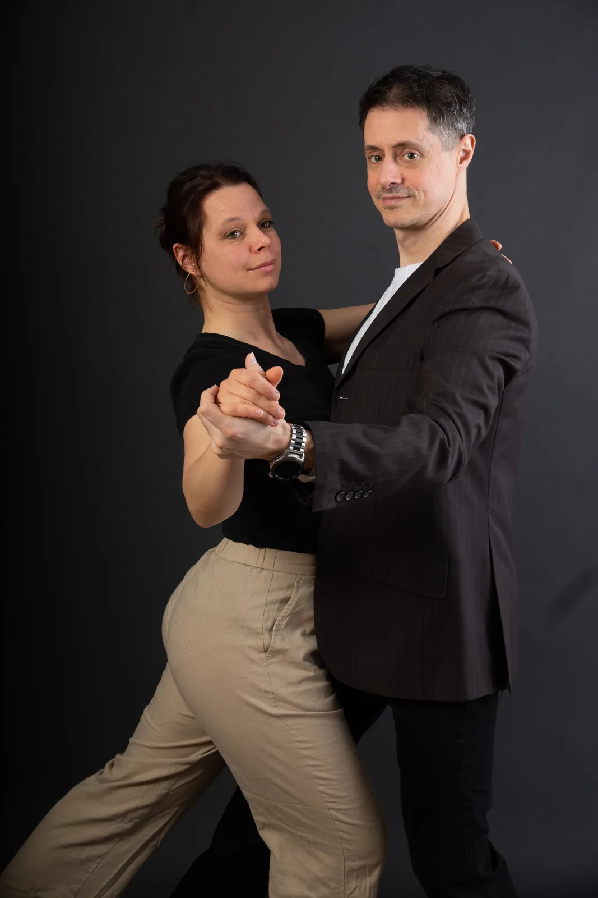

Nos cours
Des contenus de cours adaptés à tes besoins.
Pulsation Danse ne se contente pas d'enseigner un contenu de session générique. Chaque cours est soigneusement préparé et la matière de chaque session est renouvelée pour permettre un apprentissage continu même aux élèves qui choisissent de refaire un même niveau plusieurs fois.
3 styles enseignés
West Coast Swing

Le West Coast Swing est une danse de couple moderne, élégante et vraiment agréable à danser en social. Issu de la famille des danses swing, il a évolué vers un style plus fluide, plus doux et très connecté, qui laisse beaucoup de place à l'écoute et à l'interprétation musicale.
Ce qui le rend unique, c'est sa connexion élastique entre les partenaires et son déplacement en ligne, qui donnent à la danse un look à la fois souple, musical et actuel. En West Coast Swing, on met beaucoup l'accent sur la communication, le confort, le jeu et l'improvisation. On ne fait pas juste exécuter des mouvements : on danse vraiment avec la musique et avec l'autre personne.
C'est une danse qui offre un bel équilibre entre technique, liberté, expression et plaisir. C'est aussi ce qui la rend aussi intéressante pour les débutants que pour les danseurs plus avancés : elle est à la fois accessible, vivante et pleine de nuances.
Zouk Brésilien

Le Zouk brésilien est une danse de couple moderne, fluide et expressive, appréciée pour la qualité de sa connexion et la sensation de mouvement qu'elle procure. Né au Brésil au début des années 1990, il s'est développé à partir de la lambada avant d'évoluer vers une danse à part entière, avec sa propre esthétique et une grande richesse d'interprétation.
Ce qui le rend unique, c'est son mélange de fluidité, de musicalité et de communication entre les partenaires. Le Zouk brésilien met en valeur les déplacements organiques, les mouvements du haut du corps, les isolations et une grande qualité d'écoute et de guidage. Il laisse aussi beaucoup de place à l'improvisation et à l'expression personnelle, ce qui en fait une danse à la fois technique, créative et profondément humaine.
Blues

Le Blues est une danse de couple chaleureuse, riche et très rythmique. Elle s'est développée dans les communautés afro-américaines des États-Unis, en lien avec la culture blues. Comme plusieurs danses sociales afro-américaines, elle met l'accent sur le ressenti, le rythme, l'écoute et la connexion entre les partenaires.
Ce qui rend le Blues unique, c'est sa grande liberté d'expression. C'est une danse à la fois nuancée, avec des mouvements organiques et une attention particulière aux subtilités de la musique. Selon le contexte, elle peut être douce, intense, joueuse ou intime, tout en restant centrée sur le confort, la communication et le dialogue entre les partenaires.
Aujourd'hui, le Blues séduit par son côté à la fois simple, profond et humain. C'est une danse qui invite à ralentir, à mieux écouter et à créer un vrai moment de connexion avec la musique et avec l'autre personne.
Aller plus loin